特別オーダー・部屋食
ご希望の食事スタイルや記念日のご相談を承ります。実施内容はご予約時に個別に確認します。
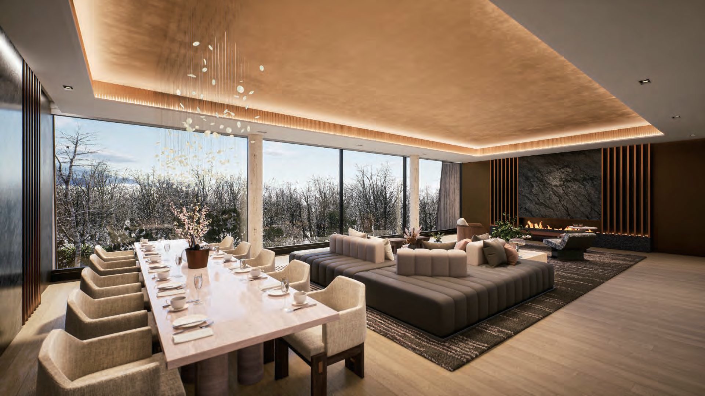
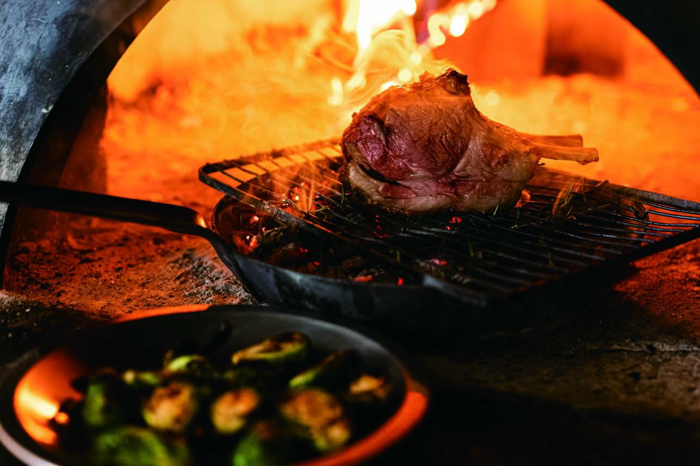
森に囲まれた4棟のプライベートヴィラ「ALUNA」と、薪火・発酵・北海道の食材をテーマにしたレストラン「Ly」。宿泊と食事を組み合わせた滞在も、Lyでのディナーのみの利用もご案内します。
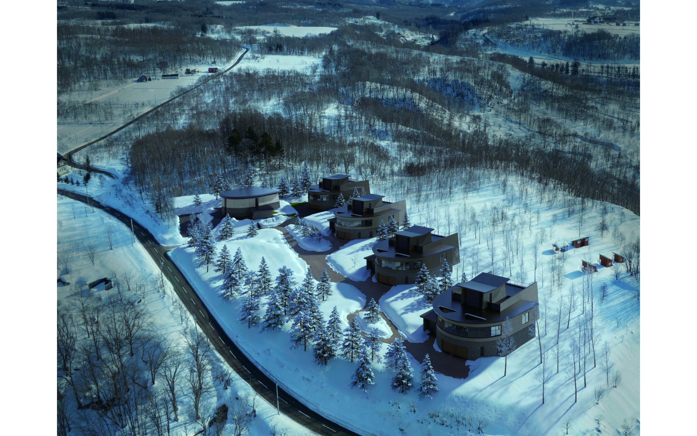
ニセコのKi、Aya、Skye、Setsu、Panorama、Odin Houseなどの設計を手がけてきた建築家、石黒孝一郎氏がプロジェクトを率います。
羊蹄山とニセコアンヌプリを望む敷地に、約12mのパノラマウィンドウ、天然温泉、ルーフトップテラスなどを計画。建物の中にいながら、土地の風景や四季を感じられる設計です。
インテリア：JYL Collection
キッチン：Madre
照明：Tomoru Design
ランドスケープ：SOLSO
大きな窓があるリビング、家族や仲間と食卓を囲めるダイニング、滞在のためのキッチン。屋外のテラスからは、ニセコの景色も楽しめます。
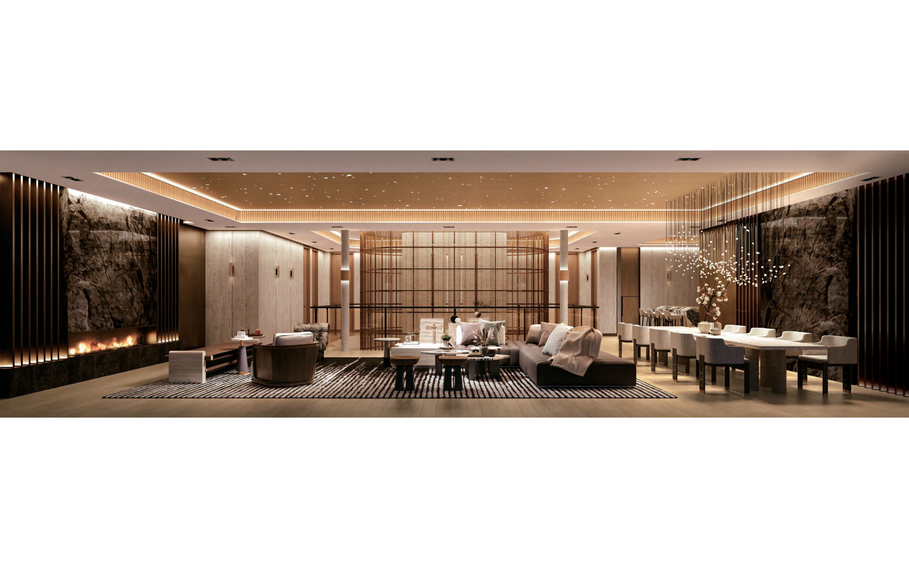
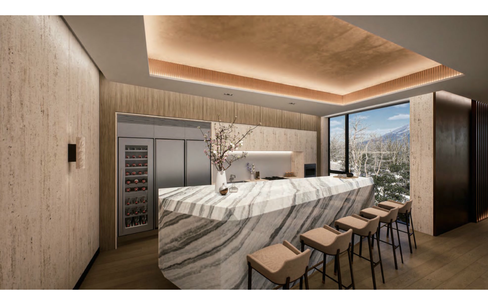
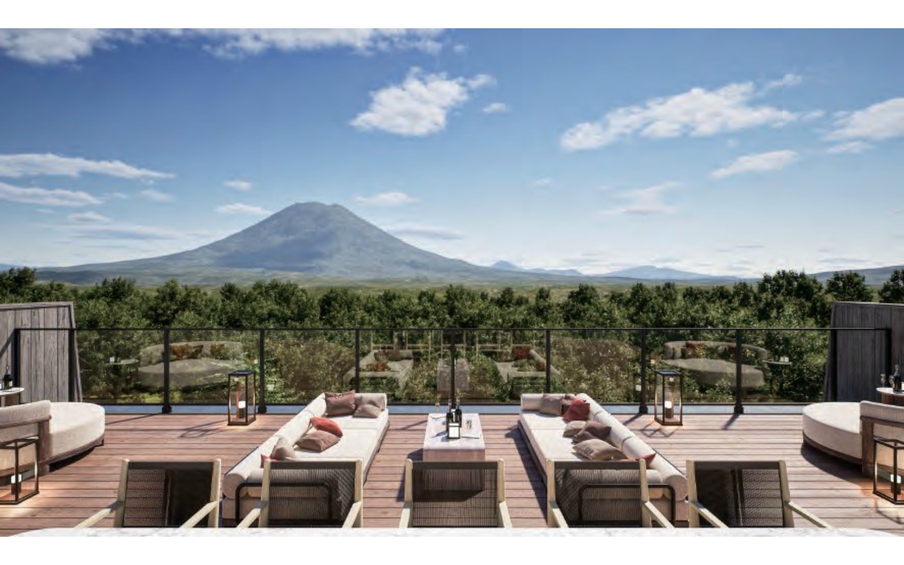
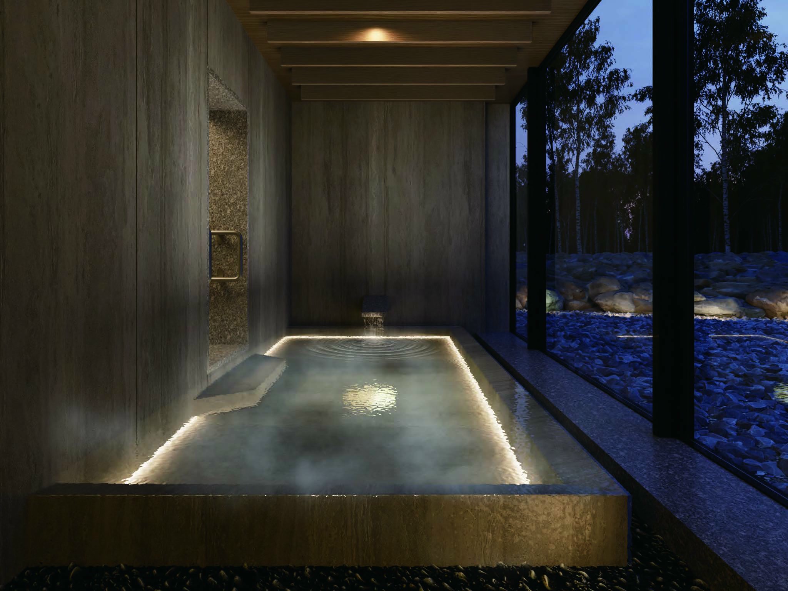
各ヴィラには天然温泉とプライベートサウナ、ウェルネスルームを計画しています。スキーや観光のあとも、ヴィラの中でゆっくり過ごせます。
ヴィラ内で楽しめるプライベートな温泉。
温泉と組み合わせて過ごせる設備。
施術台を備える計画。具体的な提供サービスは個別確認。
宿泊者・オーナー向けの共用施設。
LyはALUNAのクラブハウス内にあるレストラン。ヴィラ宿泊者だけでなく、外部からのディナー利用もご案内します。
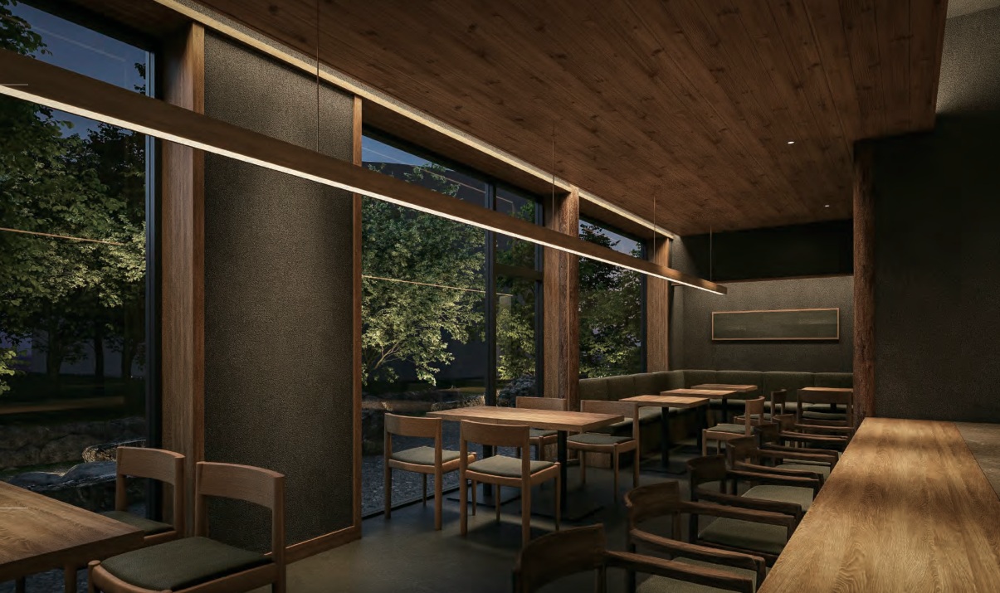
ヴィラオーナー・宿泊者のご予約を優先して承ります。外部ゲストのご利用もご相談ください。
西恭平シェフの監修のもと、北海道の食材にフレンチの技法、薪火の香りと発酵の旨味を重ねます。
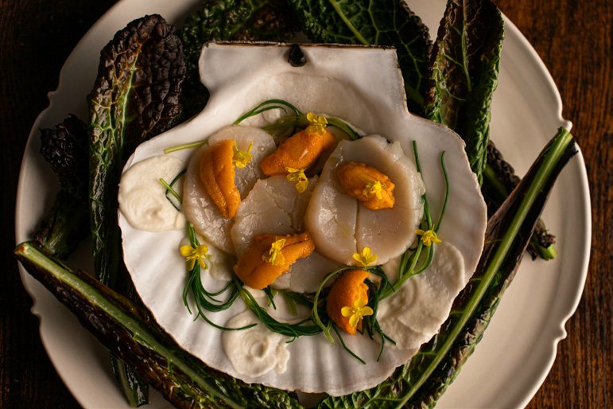
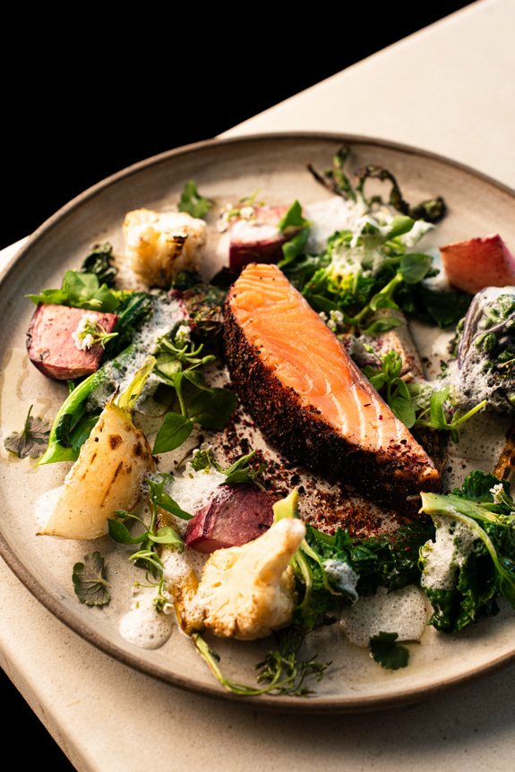
京都・フランス・東京で経験を重ね、Nekiとsongbookを手がける西恭平シェフ。Lyでは料理全体を監修します。薪火を活かした料理に加え、器や音楽、空間まで含めたレストランづくりを大切にしています。

ビブグルマンNeki が選出
セレクテッドレストランミシュランガイド東京2025：Neki・songbook
二つ星店での修業キュイジーヌ［s］ミッシェル・トロワグロに約3年間勤務
薪火を間近に感じるカウンター8席、テーブル16席、個室10席。食事の目的と人数に合わせてお選びいただけます。
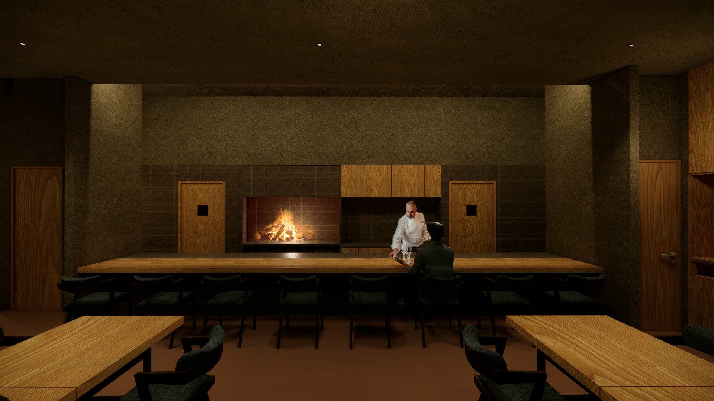
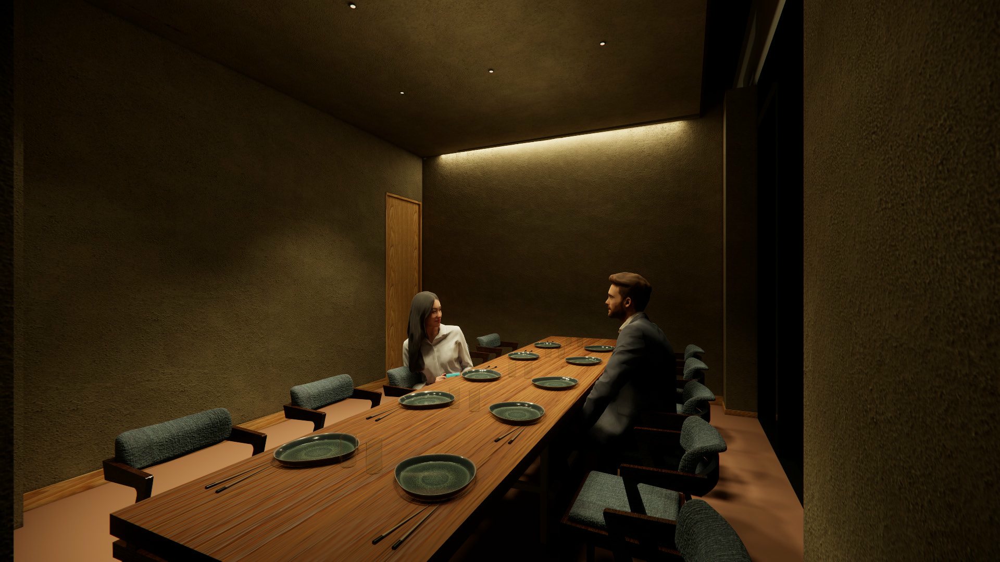
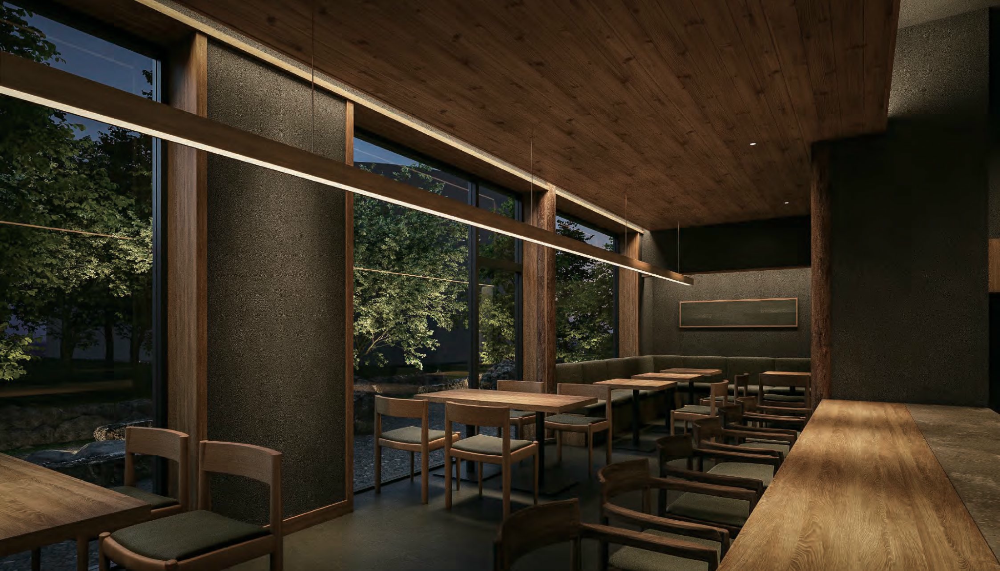
調理の臨場感を感じやすい席。
落ち着いて会話を楽しむ食事に。
1室の個室。利用条件は個別確認。
記念日のコースディナーから、連泊中のアラカルトまで。食事の目的やその日の気分に合わせてお選びいただけます。
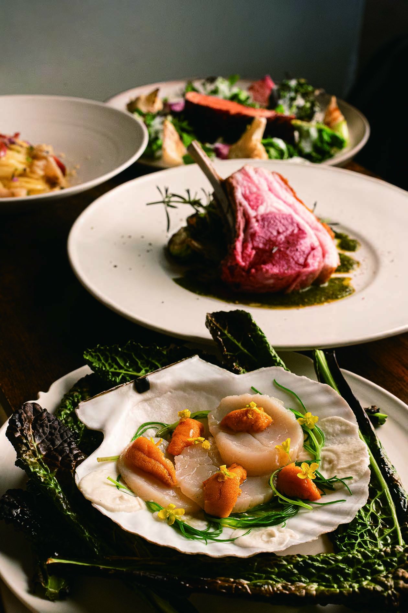
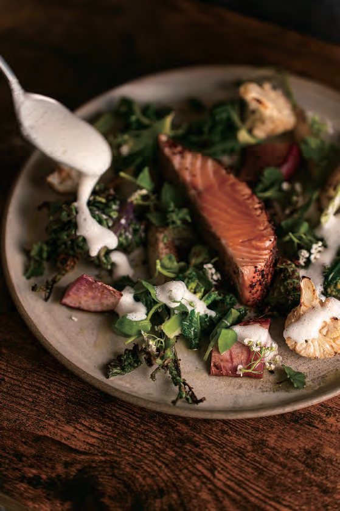
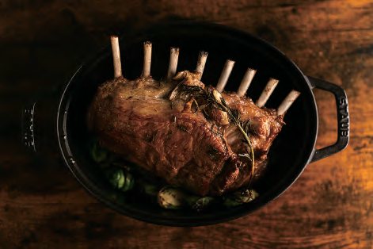
アラカルトでは、コース以外の食事選択も想定されています。料理写真・献立は代表例であり、季節・仕入れにより内容が変わります。
朝食はヴィラ内でゆっくりと。外へ出ることなく、プライベートな空間で一日を始められます。
提供時間・メニュー・料金は宿泊条件に合わせてご案内します。
ご希望の食事スタイルや記念日のご相談を承ります。実施内容はご予約時に個別に確認します。
原因食材、症状の程度、微量混入の可否などを事前にお知らせください。対応可否をご案内します。
ベジタリアン、ヴィーガン、ハラールなど、ご希望の条件を伺ったうえで個別に確認します。
アンヌプリ、東山（ニセコビレッジ）、ヒラフ、HANAZONOは、ニセコアンヌプリ山麓に広がるそれぞれ異なるエリアです。曽我はスキー場の中心街ではなく、ニセコ町側の静かな滞在拠点です。
※方角とエリアの並びを理解するための概略図です。正確な敷地位置・道路・距離・所要時間は示していません。実際の移動経路は地図と運営側で確認してください。
ALUNAへの宿泊、Lyでのディナー、長期滞在中の食事など、ご希望に応じて、それぞれの予約条件をご案内します。手配の際は、以下の情報を事前にお知らせください。
希望日程、人数、滞在目的、客室の利用方法、未成年者の有無、必要なサービス。
一般宿泊者への提供条件とオーナー向けサービスは区別して確認します。
希望日時、人数、席種（カウンター・テーブル・個室）、コース／アラカルトの希望。外部利用の受付可否・優先予約条件・キャンセル規定は事前確認します。
アレルギー食材、程度、宗教上の制約、ヴィーガンなどの食事方針を予約前に具体的に共有してください。特別メニュー・部屋食の実施可否は個別に確認します。
空港・スキー場への車両、ガイド・通訳・ドライバーの宿泊、車両駐車場所、早朝・夜間対応の要否まで整理します。同行者の宿泊はゲストとは別に手配する場合があります。
ALUNAの宿泊とLyの食事は、確認すべき運営条件が異なります。予約窓口と手続きの分担は【要確認】。旅行全体の企画・手配を代理店にお願いする想定です。
専用車などの移動手段を事前手配。降雪による遅延を見込む。
車両、用具の積載、送迎場所、迎車時刻を確認する。
降雪・凍結による所要時間の変動を考慮する。
ALUNAのプライベートヴィラと、料理監修・西恭平シェフによるRestaurant Ly。旅の目的に合わせて、宿泊とディナーをご提案いただけます。
旅行代理店向け施設・食事紹介 / 社外配布前確認用ドラフト